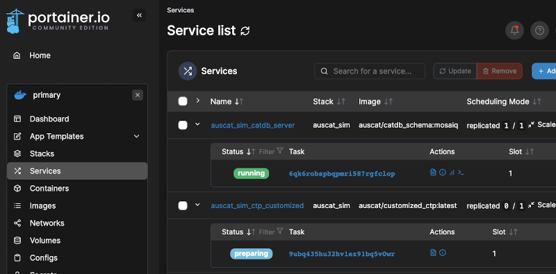
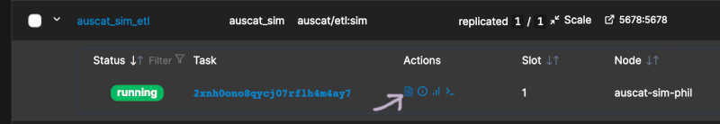
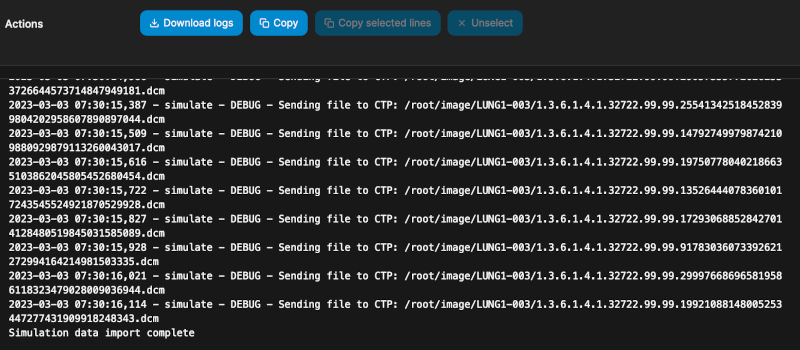
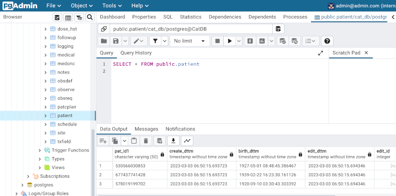
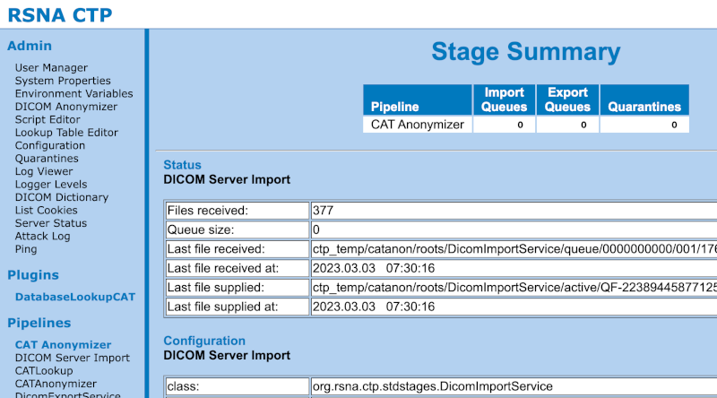
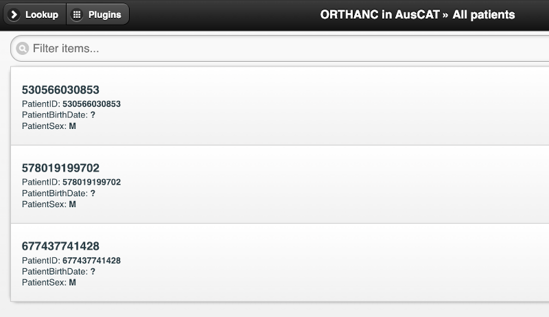

Simulation Environment Deployment#
To enable learning, development and testing of the AusCAT system a simulation environment can be deployed which loads some public data obtained from The Cancer Imaging Archive. Within this environment the entire system can be run end-to-end to help prepare for deployment of a production ready system at participating centres/sites.
CAUTION: The simulation environment deals only with public data. Therefore some default passwords are used to enable quick and easy deployment of the simulation setup. These are not suitable for use in a production system and care should be taken to set secure passwords when deployed in a production environment.
What you’ll need#
To complete the steps in this guide, ensure you have:
AusCAT Dockerhub access token.
University affiliated account and access to
ACDN-AusCAT-Simproject (if intending to use NECTAR cloud).
If you require either of these please contact your AusCAT representative.
Virtual Machine Setup#
This guide assumes you are using some sort of Virtual Machine (VM running an Ubuntu Operating System). In fact, the system doesn’t need to be a Virtual Machine at all, it could be a desktop or laptop computer running Ubuntu.
If your system is not running Ubuntu, you are still able to follow this guide. However you will likely need to explore the Docker documentation in Install Docker to determine how to best install Docker for your operating system. Once installed you can follow the remaining instructions in the guide.
System Requirements: To run the simulation environment as well as the examples that follow you should have at least 4GB RAM and a 30GB Hard Disk available.
NECTAR Cloud#
If you do not already have a Virtual Machine or alternative system in which to install this simulation environment, you may want to use the NECTAR cloud to setup such a Virtual Machine. Note that you will need a University affiliated account and access to the ACDN-AusCAT-Sim Project. Instructions can be found here.
Docker + Portainer Installation#
Once VM is up and running, you will need to install Docker and Portainer which will enable deployment of the AusCAT system Docker stack. Instructions can be found here.
AusCAT Simulation Environment Deployment#
Now you’re ready to deploy the AusCAT simulation Docker Stack.
Deploy the simulation Docker stack#
Next navigate to Stacks, press Add Stack and enter a suitable name. In the Web editor, insert the AusCAT Simulation Docker Stack:
version: "3.8"
services:
# Postgres Key database service
keydb_server:
restart: always
# Link to the image source from DockerHub
image: "auscat/keydb_schema:latest"
# Necessary environment variables
environment:
POSTGRES_USER_FILE: /run/secrets/keydb_user # db superuser (pass in from secrets)
POSTGRES_PASSWORD_FILE: /run/secrets/keydb_pass # db superuser password (pass in from secrets)
POSTGRES_HOST: localhost # db host
PGDATA: /var/lib/postgresql/data/pgdata # path to postgres data
TZ: Australia/Sydney # your machine's timezone
# postgres data storage location (as a volume)
volumes:
- key-pgdata:/var/lib/postgresql/data/
ports:
- 5433:5432
# Postgres Cat database service
catdb_server:
restart: always
# Link to the image source from DockerHub
image: "auscat/catdb_schema:mosaiq" # Change tag to aria if needed
# Necessary environment variables
environment:
POSTGRES_USER_FILE: /run/secrets/catdb_user # db superuser (pass in from secrets)
POSTGRES_PASSWORD_FILE: /run/secrets/catdb_pass # db superuser password (pass in from secrets)
POSTGRES_HOST: localhost # db host
PGDATA: /var/lib/postgresql/data/pgdata # path to postgres data
TZ: Australia/Sydney # your machine's timezone
volumes:
- cat-pgdata:/var/lib/postgresql/data/
ports:
- 5434:5432
# PG admin service
pgadmin4:
# Link to the image source from DockerHub
image: "auscat/pgadmin4"
restart: always
# Necessary environment variables
environment:
PGADMIN_DEFAULT_EMAIL: admin@admin.com
PGADMIN_DEFAULT_PASSWORD: password
volumes:
- pgadmin-data:/var/lib/pgadmin
ports:
- 5050:80
# Orthanc service
orthanc:
# Link to the image source from DockerHub
image: "auscat/orthanc:latest"
ports:
- 8042:8042 # Browser access port for CTP
- 4242:4242
volumes: # 1TB SSD Disk
- orthanc-data:/var/lib/orthanc/db # Change me
# Customized CTP server
ctp_customized:
# Link to the image source from DockerHub
image: "auscat/customized_ctp:latest"
depends_on:
- keydb_server
ports:
- 9090:9090 # Browser access port for CTP
- 8104:8104
environment:
ORTHANC_HOSTNAME: orthanc
ORTHANC_PORT: 4242
# CTP logs storage location (CTP logs usually bind mount to your filesystem to access easily on your machine)
volumes:
- ctp-logs:/logs
etl:
image: 'auscat/etl:sim'
ports:
- 5678:5678
environment:
PATIENT_IDS: "LUNG1-001 LUNG1-002"
KEYDB_HOST: "keydb_server"
KEYDB_PORT: 5432
KEYDB_USERNAME: key_admin
KEYDB_PASSWORD: postgres
CATDB_HOST: "catdb_server"
CATDB_PORT: 5432
CATDB_USERNAME: postgres
CATDB_PASSWORD: postgres
CTP_HOST: "ctp_customized"
CTP_PORT: 8104
SIMULATION_IMPORT_MODE: auto
depends_on:
- catdb_server
- keydb_server
- ctp_customized
volumes:
- n8n-data:/home/node/.n8n
analysis_example:
image: "auscat/etl:example"
ports:
- 8888:8888
depends_on:
- etl
volumes:
- analysis-data:/data
volumes:
key-pgdata:
cat-pgdata:
ctp-customized:
ctp-logs:
orthanc-data:
pgadmin-data:
d2rq-data:
n8n-data:
analysis-data:
Now wait a few minutes while the required images are pulled and the stack is deployed. You can monitor the progress of the containers in the Services section (left menu). Here you can see which containers are running or are still preparing (being pulled from Dockerhub). Once all containers are running, you are ready to proceed with the next step.

Import simulation data#
The etl Service defined in the stack deployed has an option for SIMULATION_IMPORT_MODE which is set to auto. Therefore, the script to import the simulation data should run once all Services are up and running. You can inspect the logs of the etl service to confirm this completed which you can access using the icon depicted:

You may need to wait some time for the stack to spin up and the simulation data to download and import. Eventually you should see a successful import message in the logs without any errors:

Once data is imported, you can now inspect the data using the PGAdmin tool, as well as CTP and Orthanc. Log in replacing the [IP_ADDRESS] with your VM’s IP address:
PGAdmin#
The PGAdmin tool lets you explore the tabular data in the CatDB and KeyDB databases. Visit http://[IP_ADDRESS]:5050 in your web browser. The simulation environment username and password to log in are:
Username: admin@admin.com
Password: password
Navigate to the CatDB and inspect the patient table (under CatDB->Databases->cat_db->Schemas->public->Tables). Right click the patient table and choose View/Edit Data->All Rows:

Also explore the other tables, including those in the KeyDB to inspect the data that was imported as part of the simulation environment (note this data is quite sparse so most tables will be empty).
CTP#
The CTP accepts incoming DICOM files for anonymisation before sending them to the Orthanc. Visit http://[IP_ADDRESS]:9090 in your web browser. Click login in the top right hand corner, the simulation environment username and password to log in are:
Username: admin
Password: admin
Click DICOM Server Import in the left menu. Here you can see how many DICOM files the CTP received for anonymisation (in the screenshot below this is 377).

Orthanc#
Orthanc is PACS which stores the anonymised DICOM data. Visit http://[IP_ADDRESS]:8042 in your web browser. Log in using these simulation environment credentials:
Username: admin
Password: admin
Click All Patients and explore the anonymised simulation DICOM data imported.
